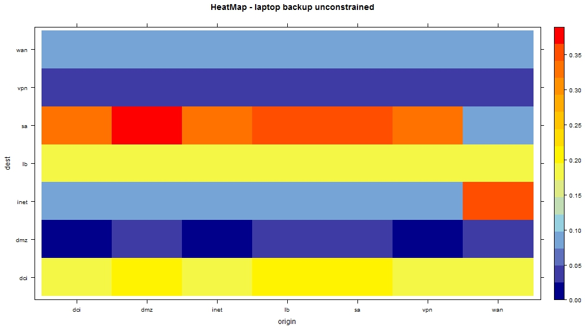

Traffic Matrix Estimation
TM applied to a managed DC
Patricio Villar
Introduction
- A traffic matrix is a tool used by network architects for network management and capacity planning.
- Taken together with network topology, routing and fault data; the TM can provide a great deal of help in the diagnosis and management of network congestion.
- On longer scales, traffic matrices are critical inputs to network design, capacity planning and business planning.
What does a TM provide?
"For every ingress point i into the network and egress point j out of the
network, the volume oftraffic T(i,j) from i to j over a time interval."
Methods to Effectively Compute TMs
- Gravity Models
- Generalized Gravity Models
- Tomo-Gravity Models
Tomogravity explained
- "Tomo-gravity" = tomography + gravity modeling
- Exploits topological equivalence to restrict problem size
- Use of least squares to get the solution:

Tomogravity Model Applied
- In gral, there are not enough constraints: O(N) vs. O(N2)
- Constraints give a subspace of possible solutions
- Constraints sub-space: Y = A * x + e; where x is the estimated TM
- Finds a solution that satisfies the constraint AND is close to the Gravity model (Kullback-Lieber distance)
- Orders of residuals "e" around 0.1. Tested in the Internet2 Abilene network.
Where do we get Y?

- VPR scheduled reports can provide link loads!!!
Data Tyding:
- VPR data must be rolled up.
- In general, it provides tidy data. There are some exceptions though.
- good deck on tidy data on http://www.stat.ucla.edu/~nfultz/tidy.html - Neal Futz (UCLA)
Create a simple model of your network:
Calculate and Visualize your TM:
Calculate and Visualize your TM (Cont'ed):
Calculate and Visualize your TM (Cont'ed):
Tshoot with Heat Maps:

Tshoot with Heat Maps (Cont'ed):

Further Applications:
Network Anomography: Detect anomalies using traffic matrix time and spatial series.
Best paper in research.att.com ("Network Anomography: Robust, General Network-Level Anomaly Inference" - Zhang, Ge, Greenberg, Roughan)
Biblio:
- Information, Gravity and Traffic Matrices, NISS Internet Tomography Technology Workshop, March 28th, North Carolina, 2003. Matthew Roughan
- Traffic matrix estimation on a large IP backbone, A Gunnar, Mikael Johansson, and Thomas Telkamp, Internet Measurement Conference 2004.
- Time-Varying Network Tomography: Router Link Data, Jin Cao, Drew Davis, Scott Vander Wiel and Bin Yu, Journal of the American Statistical Association, Vol. 95, No. 452 (Dec., 2000), pp. 1063-1075.
- Statistical Analysis of network data. J. Kolaczyk (Jan 2014)